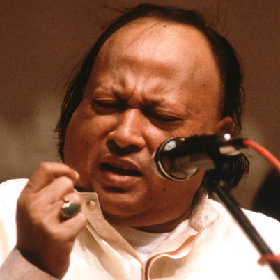
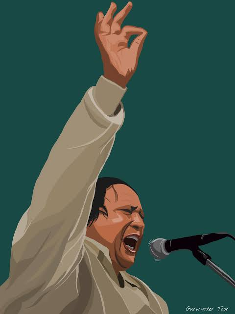
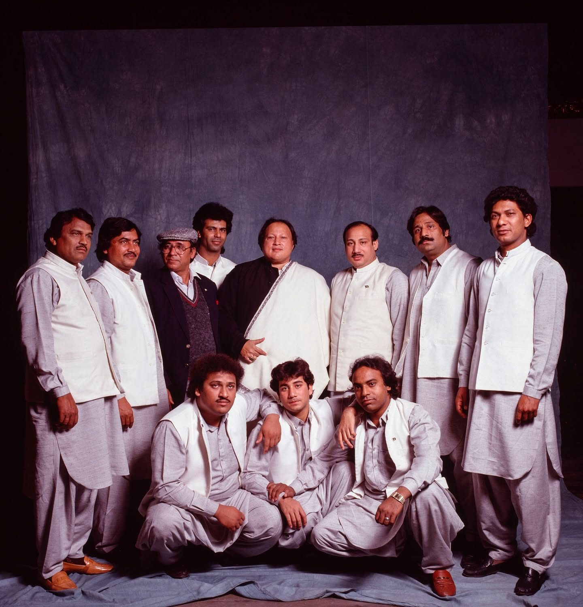
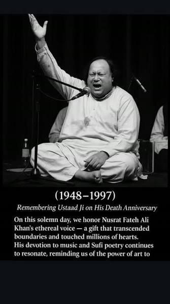

Nusrat Fateh Ali Khan

Nusrat Fateh Ali Khan (13 October 1948 – 16 August 1997) was a Pakistani musician, primarily a singer of Qawwali, the devotional music of the Sufis. He is considered one of the greatest voices ever recorded and was credited with introducing Qawwali music to international audiences. Khan's voice was known for its range, power, and expressiveness, and he was able to perform at a high level of intensity for several hours at a time. He was also known for his ability to improvise and his mastery of complex vocal techniques.
Khan's music was deeply rooted in the Sufi tradition, and his lyrics often focused on themes of love, devotion, and spirituality. He was also known for his collaborations with Western musicians, including Peter Gabriel, Eddie Vedder, and Michael Brook. Khan's music has had a lasting impact on the world of music, and he is widely regarded as one of the greatest singers of all time.
Early career
Nusrat Fateh Ali Khan was born in Faisalabad, Pakistan, into a family of musicians. He began performing at a young age and quickly gained recognition for his talent. He released his first album in 1971 and went on to release numerous albums throughout his career. Khan's music was deeply rooted in the Sufi tradition, and he was known for his ability to convey deep emotion through his singing.
Khan's music was deeply rooted in the Sufi tradition, and his lyrics often focused on themes of love, devotion, and spirituality. He was also known for his collaborations with Western musicians, including Peter Gabriel, Eddie Vedder, and Michael Brook. Khan's music has had a lasting impact on the world of music, and he is widely regarded as one of the greatest singers of all time.

1990s: International recognition
Nusrat Fateh Ali Khan's international recognition began in the 1990s when he collaborated with Western musicians and performed at international music festivals. His music was featured in several films, including the soundtrack for the 1995 film "Dead Man Walking," which earned him a Grammy nomination. Khan's music was also featured in the 1996 film "The Last Temptation of Christ," which helped to introduce Qawwali music to a wider audience.
Khan's international recognition continued to grow throughout the 1990s, and he performed at several high-profile events, including the Nobel Peace Prize Concert in 1995 and the Montreux Jazz Festival in 1996. He also collaborated with several Western musicians, including Peter Gabriel, Eddie Vedder, and Michael Brook.
Nusrat Fateh Ali Khan passed away on August 16, 1997, at the age of 48. Despite his untimely death, his music continues to be celebrated and has had a lasting impact on the world of music. He is widely regarded as one of the greatest singers of all time and is remembered for his powerful voice, his ability to convey deep emotion through his singing, and his contributions to the world of Qawwali music.

Legacy
Nusrat Fateh Ali Khan's legacy continues to influence musicians and music lovers around the world. His music has been sampled and covered by several artists, including A.R. Rahman, who collaborated with Khan on the soundtrack for the 1998 film "Bombay." Khan's music has also been featured in several documentaries and films, including the 2001 documentary "Nusrat Fateh Ali Khan: The Voice of God" and the 2005 film "The Kite Runner." Khan is often credited as one of the progenitors of "world music."[97] Widely acclaimed for his spiritual charisma and distinctive exuberance, he was one of the first and most important artists to popularize qawwali, then considered an "arcane religious tradition", to Western audiences.[97] His powerful vocal presentations, which could last up to 10 hours, brought forth a craze for his music all over Europe. Alexandra A. Seno of Asiaweek wrote
